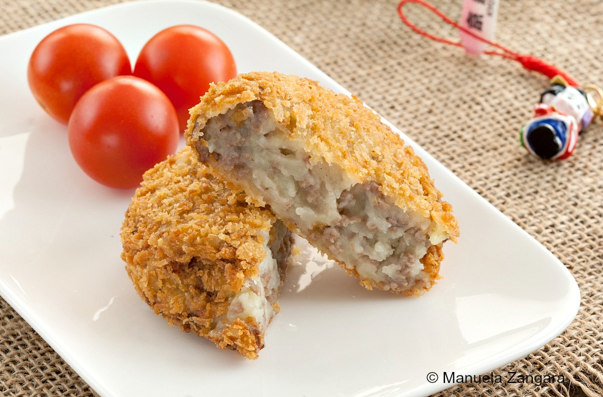

Japanese Beef Croquettes

Japanese croquettes combined with ground beef, mashed potatoes, and onions; formed into patties and then
coated with panko. Deep fried into a golden brown!
Ingredients
- Russet Potatoes (3 Peeled and chopped)
- Butter (1 tablespoon)
- Vegetable oil (1 tablespoon)
- Onions (3 Chopped)
- Ground Beef (3/4 Pound)
- Light Soy Sauce (4 teaspoons)
- Flour
- Large eggs (2 Beaten)
- Panko Bread Crumbs
- Oil (1/2 cup)
Steps
- Add potatoes to a large pot of salted boiled water; cook until tender, around 15 minutes. Drain and pour potatoes
into a large bowl. Stir in butter and mash.
- Heat 1 tablespoon oil in a large skillet over medium heat. Stir in onions and cook
until soft. Stir in beef and soy sauce. Cook, stirring continously, until beef is browned and all liquid
is evaporated. Combine beef and onions with potatoes, and stir well.
- Heat 1/2 cup oil in a deep skillet over medium-high heat
- Shape potato and beef mixture into 10 similarly sized balls, then flatten into
patties. Dredge patties in flour, then dip in egg, and coat with panko bread crumbs.